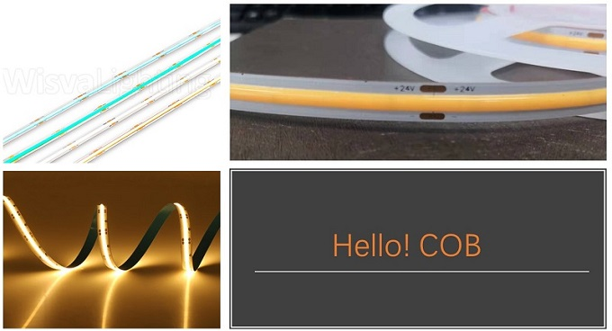
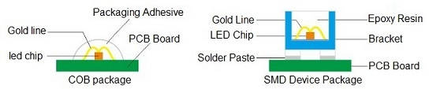

The latest innovation on the LED front you cannot miss!
The latest innovation on the LED front is the "chip on board" light, also known as the COB. The means is to directly package the chip on the circuit board. It is a kind of LED integrated package technology.

No more hard time choosing SMD like 2835, 5050, 5630...the new COB design simply uses the chips directly, which make the
emitting units unprecedentedly close to each other, and create super even lighting performance.
We provide 3 types COB strip light.
1. 512leds/meter, DC24V, 10W/meter, 8mm PCB, 15.63mm cutting section, 5 meter/roll
2. 512leds/meter, DC24V, 10W/meter, 10mm PCB, 15.63mm cutting section, 5 meter /roll
3. 546leds/meter, DC24V, 16W/meter, 10mm PCB, 12.82mm cutting section, 5 meter/roll
The COB strips are following below specification:
● CRI90+
● DC24V input
● Cuttable on specified cut marks
● white, red, green, blue colors are available
● UL listed to ensure the durability and safety of the LED tape light's lifespan
● 3 years warranty
The COB strip is a market setter and a game-changer. Say goodby to strips that show and say hello to smooth dot less indirect light!
Eddy Shen
International Sales Consultant
Orient Lighting
Phone +86 21 6316 6512
Cell +86 133 8170 1319
Skype eddy_shen@orientlighting.com
Web www.orientlighting.com